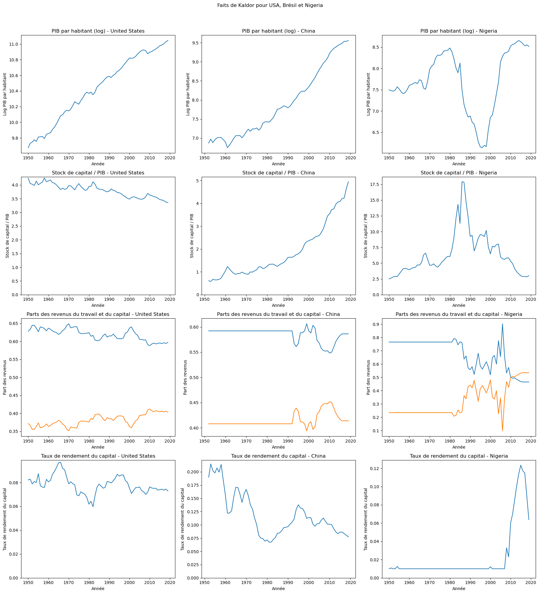

Croissance stable à long terme due à l’équilibre entre investissement et dépréciation.
2. Ratio capital/PIB constant
Le ratio \(\frac{K}{Y}\) se stabilise à long terme selon l’investissement et la croissance démographique.
3. Parts constantes du travail et du capital
Répartition stable des revenus entre travail et capital à long terme dans l’état stationnaire.
4. Taux de rendement du capital constant
Taux de rendement du capital stable à long terme, déterminé par les rendements marginaux.
Retour sur les exercices 4 et 5
#| '!! shinylive warning !!': |#| shinylive does not work in self-contained HTML documents.#| Please set `embed-resources: false` in your metadata.#| standalone: true#| viewerHeight: 550from shiny import App, reactive, render, uiimport numpy as npimport matplotlib.pyplot as pltapp_ui = ui.page_sidebar( ui.sidebar( ui.input_select( "shock_type", "Type of shock", choices={ "population": "Population level", "capital": "Capital stock", "savings": "Savings rate", "tech": "Technology" }, selected="population" ), ui.input_numeric( "shock_value", "Shock magnitude", value=0, min=-0.99, max=2.0, step=0.1 ), ui.input_checkbox( "tech_progress", "Include technological progress", value=False ), width=300 ), ui.output_plot("simulation_plot"),)def server(input, output, session): # Model parameters alpha = 0.33 s0 = 0.2 delta = 0.05 n0 = 0.001 def simulate_k(T, shock_time, shock_type, shock_value, k0, s0, n0, g0, s_after, n_after, g_after): k = np.zeros(T) k[0] = k0 for t in range(T - 1): if t == shock_time: if shock_type == 'capital': k[t] = (1 + shock_value) * k[t] elif shock_type == 'population': k[t] = k[t] / (1 + shock_value) if t < shock_time: s_current, n_current, g_current = s0, n0, g0 else: s_current = s_after if shock_type == 'savings' else s0 n_current = n0 g_current = g_after if shock_type == 'tech' else g0 k[t+1] = k[t] + s_current * (k[t]**alpha) - (delta + g_current + n_current)*k[t] return k def simulate_A(T, shock_time, shock_type, g0, g_after): A = np.zeros(T) A[0] = 1.0 for t in range(T-1): if t < shock_time: A[t+1] = A[t] * (1 + g0) else: A[t+1] = A[t] * (1 + (g_after if shock_type=='tech' else g0)) return A def simulate_L(T, shock_time, shock_type, shock_value, n0): L = np.zeros(T) L[0] = 1.0 for t in range(T-1): if t == shock_time and shock_type == 'population': L[t] = L[t] * (1 + shock_value) L[t+1] = L[t] * (1 + n0) return L def compute_equilibrium_paths(T, shock_time, k_ss_before, k_ss_after, A, L): # For each variable, compute the equilibrium path before and after shock K_eq = np.zeros(T) Y_eq = np.zeros(T) Y_pc_eq = np.zeros(T) wages_eq = np.zeros(T) rental_eq = np.zeros(T) for t in range(T): k_eq = k_ss_before if t < shock_time else k_ss_after K_eq[t] = k_eq * A[t] * L[t] Y_eq[t] = A[t] * L[t] * (k_eq**alpha) Y_pc_eq[t] = A[t] * (k_eq**alpha) wages_eq[t] = (1 - alpha) * Y_pc_eq[t] rental_eq[t] = alpha * (k_eq**(alpha - 1)) return K_eq, Y_eq, Y_pc_eq, wages_eq, rental_eq @output @render.plot def simulation_plot(): shock_type = input.shock_type() shock_value = input.shock_value() g0 = 0.001 if input.tech_progress() else 0.00 T1 = 200 T2 = 300 T = T1 + T2 shock_time = T1 if shock_type == 'population': s_after, n_after, g_after = s0, n0, g0 elif shock_type == 'savings': s_after, n_after, g_after = s0 * (1 + shock_value), n0, g0 elif shock_type == 'tech': g_after, n_after, s_after = g0 * (1 + shock_value), n0, s0 else: # capital s_after, n_after, g_after = s0, n0, g0 k_ss_before = (s0 / (delta + g0 + n0))**(1/(1 - alpha)) k_ss_after = (s_after / (delta + (g_after if shock_type=='tech' else g0) + n0))**(1/(1 - alpha)) k0 = 0.5 * k_ss_before k_path = simulate_k(T, shock_time, shock_type, shock_value, k0, s0, n0, g0, s_after, n_after, g_after) A = simulate_A(T, shock_time, shock_type, g0, g_after) L = simulate_L(T, shock_time, shock_type, shock_value, n0) # Calculate actual paths K = k_path * A * L Y = A * L * (k_path**alpha) Y_pc = A * (k_path**alpha) wages = (1 - alpha) * Y_pc rental = alpha * (k_path**(alpha - 1)) # Calculate equilibrium paths K_eq, Y_eq, Y_pc_eq, wages_eq, rental_eq = compute_equilibrium_paths( T, shock_time, k_ss_before, k_ss_after, A, L) fig, axs = plt.subplots(2, 3, figsize=(18, 10)) plt.subplots_adjust(wspace=0.3, hspace=0.3) time = np.arange(T) # GDP axs[0,0].plot(time, Y, color='darkgreen') axs[0,0].plot(time, Y_eq, color='darkgreen', linestyle=':', alpha=0.7) axs[0,0].axvline(x=shock_time, color="red", linestyle="--") axs[0,0].set_title("GDP") # GDP per capita axs[0,1].plot(time, Y_pc, color='purple') axs[0,1].plot(time, Y_pc_eq, color='purple', linestyle=':', alpha=0.7) axs[0,1].axvline(x=shock_time, color="red", linestyle="--") axs[0,1].set_title("GDP per capita") # Wages axs[0,2].plot(time, wages, color='orange') axs[0,2].plot(time, wages_eq, color='orange', linestyle=':', alpha=0.7) axs[0,2].axvline(x=shock_time, color="red", linestyle="--") axs[0,2].set_title("Wages") # Capital return axs[1,0].plot(time, rental, color='blue') axs[1,0].plot(time, rental_eq, color='blue', linestyle=':', alpha=0.7) axs[1,0].axvline(x=shock_time, color="red", linestyle="--") axs[1,0].set_title("Capital return") # Total capital axs[1,1].plot(time, K, color='brown') axs[1,1].plot(time, K_eq, color='brown', linestyle=':', alpha=0.7) axs[1,1].axvline(x=shock_time, color="red", linestyle="--") axs[1,1].set_title("Total capital") # Labor axs[1,2].plot(time, L, color='teal') axs[1,2].axvline(x=shock_time, color="red", linestyle="--") axs[1,2].set_title("Labor") return figapp = App(app_ui, server)
TD
Exercice 2
Reproduisez les figures des faits de Kaldor en utilisant les données de trois pays (essayez un pays riche, un pays à revenu intermédiaire et un pays pauvre). Les faits de Kaldor semblent-ils également valables pour ces pays ?
Exercice 2
Ci-dessous la légende des données
Category
Variable
Description
Identifier variables
countrycode
3-letter ISO country code
country
Country name
year
Year
Real GDP, employment and population levels
rgdpe
Expenditure-side real GDP at chained PPPs (in mil. 2017US$)
rgdpo
Output-side real GDP at chained PPPs (in mil. 2017US$)
pop
Population (in millions)
emp
Number of persons engaged (in millions)
avh
Average annual hours worked by persons engaged
hc
Human capital index, based on years of schooling and returns to education; see Human capital in PWT9.
Current price GDP, capital and TFP
ccon
Real consumption of households and government, at current PPPs (in mil. 2017US$)
cda
Real domestic absorption, (real consumption plus investment), at current PPPs (in mil. 2017US$)
cgdpe
Expenditure-side real GDP at current PPPs (in mil. 2017US$)
cgdpo
Output-side real GDP at current PPPs (in mil. 2017US$)
cn
Capital stock at current PPPs (in mil. 2017US$)
ck
Capital services levels at current PPPs (USA=1)
ctfp
TFP level at current PPPs (USA=1)
cwtfp
Welfare-relevant TFP levels at current PPPs (USA=1)
National accounts-based variables
rgdpna
Real GDP at constant 2017 national prices (in mil. 2017US$)
rconna
Real consumption at constant 2017 national prices (in mil. 2017US$)
rdana
Real domestic absorption at constant 2017 national prices (in mil. 2017US$)
rnna
Capital stock at constant 2017 national prices (in mil. 2017US$)
rkna
Capital services at constant 2017 national prices (2017=1)
rtfpna
TFP at constant national prices (2017=1)
rwtfpna
Welfare-relevant TFP at constant national prices (2017=1)
labsh
Share of labour compensation in GDP at current national prices
irr
Real internal rate of return
delta
Average depreciation rate of the capital stock
Exchange rates and GDP price levels
xr
Exchange rate, national currency/USD (market+estimated)
pl_con
Price level of CCON (PPP/XR), price level of USA GDPo in 2017=1
pl_da
Price level of CDA (PPP/XR), price level of USA GDPo in 2017=1
pl_gdpo
Price level of CGDPo (PPP/XR), price level of USA GDPo in 2017=1
Shares in CGDPo
csh_c
Share of household consumption at current PPPs
csh_i
Share of gross capital formation at current PPPs
csh_g
Share of government consumption at current PPPs
csh_x
Share of merchandise exports at current PPPs
csh_m
Share of merchandise imports at current PPPs
csh_r
Share of residual trade and GDP statistical discrepancy at current PPPs
Price levels, expenditure categories and capital
pl_c
Price level of household consumption, price level of USA GDPo in 2017=1
pl_i
Price level of capital formation, price level of USA GDPo in 2017=1
pl_g
Price level of government consumption, price level of USA GDPo in 2017=1
pl_x
Price level of exports, price level of USA GDPo in 2017=1
pl_m
Price level of imports, price level of USA GDPo in 2017=1
pl_n
Price level of the capital stock, price level of USA in 2017=1
pl_k
Price level of the capital services, price level of USA=1
Exercice 2
# Télécharger les données de la Penn World Tabledata = pd.read_excel('data/TD2_pwt1001.xlsx', sheet_name='Data')# Sélectionner les pays (un pays riche, un pays à revenu intermédiaire et un pays pauvre)pays = ['United States', 'China', 'Nigeria']# Initialiser les figuresfig, axs = plt.subplots(4, 3, figsize=(18, 20))fig.suptitle('Faits de Kaldor pour USA, Brésil et Nigeria')for i, pays inenumerate(pays): donnees_pays = data[data['country'] == pays]# Taux de croissance du PIB/hab 🛠️ donnees_pays['croissance_pib_par_hab'] = donnees_pays['rgdpo'].div(donnees_pays["pop"])# Ratio du stock de capital total au PIB 🛠️ donnees_pays['ratio_capital_pib'] = donnees_pays['cn'].div(donnees_pays['cgdpo'])# Parts des revenus du travail et du capital dans le PIB 🛠️ donnees_pays['part_revenu_travail'] = donnees_pays['labsh'] donnees_pays['part_revenu_capital'] =1- donnees_pays['labsh']# Taux de rendement du capital 🛠️ donnees_pays['rendement_capital'] = donnees_pays['irr']# Graphiques# 1. PIB par habitant à l'année de base en échelle logarithmique en fonction de l'année axs[0, i].plot(donnees_pays['year'], np.log(donnees_pays['croissance_pib_par_hab'])) axs[0, i].set_title(f'PIB par habitant (log) - {pays}') axs[0, i].set_xlabel('Année') axs[0, i].set_ylabel('Log PIB par habitant')# 2. Stock de capital / PIB en fonction du temps axs[1, i].plot(donnees_pays['year'], donnees_pays['ratio_capital_pib']) axs[1, i].set_title(f'Stock de capital / PIB - {pays}') axs[1, i].set_xlabel('Année') axs[1, i].set_ylabel('Stock de capital / PIB') axs[1, i].set_ylim(bottom=0)# 3. La part du travail dans le PIB axs[2, i].plot(donnees_pays['year'], donnees_pays['part_revenu_travail'], label='Part des revenus du travail') axs[2, i].plot(donnees_pays['year'], donnees_pays['part_revenu_capital'], label='Part des revenus du capital') axs[2, i].set_title(f'Parts des revenus du travail et du capital - {pays}') axs[2, i].set_xlabel('Année') axs[2, i].set_ylabel('Part des revenus')# 4. Taux de rendement du capital en fonction de l'année axs[3, i].plot(donnees_pays['year'], donnees_pays['rendement_capital']) axs[3, i].set_title(f'Taux de rendement du capital - {pays}') axs[3, i].set_xlabel('Année') axs[3, i].set_ylabel('Taux de rendement du capital') axs[3, i].set_ylim(bottom=0)plt.tight_layout(rect=[0, 0, 1, 0.96])plt.show()
Exercice 2

Exercice 6 - L’unification de la Corée
Supposons que la Corée du Nord et la Corée du Sud aient le même niveau technologique, qui ne croît pas, et aient également une population constante. Leurs populations et stocks de capital respectifs sont :
\(L_{sud} = 10, \quad K_{sud} = 2430\)
\(L_{nord} = 5, \quad K_{nord} = 160\)
La fonction de production est la suivante :
\(Y = K^{\alpha}L^{1-\alpha}\), avec \(\alpha = 0.4\) et le taux de dépréciation \(\delta = 0.08\).
Calculez le PIB par habitant de chaque pays.
Calculez les salaires et le taux d’intérêt de chaque pays.
Supposez maintenant que les deux pays s’unissent. Quel est le nouveau stock de capital par habitant \(K/L\) ? Quel est le nouveau PIB par habitant ?
Calculez les salaires et les taux d’intérêt du nouveau pays. Interprétez.
Les personnes et/ou les machines se déplaceront-elles physiquement entre le Nord et le Sud ? Dans quelle direction ?
Exercice 7 - Un modèle AK
Supposons que la fonction de production prenne la forme :
\(F(K,L) = AK\)
La/Lesquelles des hypothèses que nous avons formulées à propos de \(F\) sont satisfaites et la/lesquelles ne le sont pas ?
Supposons que toutes les autres hypothèses que nous avons utilisées dans le modèle de Solow soient valables et qu’il n’existe pas de progrès technologique. Trouvez l’expression de \(\frac{k_{t+1}}{k_t}\).
Cette économie va-t-elle croître à long terme ? Expliquez.
Exercice 8 - Causes et comptabilité de la croissance
Supposons qu’une économie soit bien décrite par l’état stationnaire du modèle de croissance de Solow avec un progrès technologique constant et une croissance démographique nulle. Imaginez que nous prenions des données sur cette économie et effectuions un exercice de comptabilité de croissance.
Quelle part de croissance attribuerons-nous à l’accumulation de capital et quelle part à la technologie ?
Quel est le rapport avec le résultat selon lequel sans progrès technologique, il n’y aurait pas de croissance à l’état stationnaire ?
Exercice 9 - Les sources de la PTF
Supposons que la véritable fonction de production à Gotham soit :
\[ Y = A K^\alpha L^{1-\alpha} \]
Malheureusement, la criminalité est un énorme problème à Gotham, de sorte que pour chaque ouvrier, les entreprises doivent embaucher \(\gamma\) gardes de sécurité juste pour protéger leurs produits contre le vol. Les agents de sécurité qualifieront bien entendu leur activité de travail même s’ils ne produisent rien en réalité.
Utilisez la notation \(N\) pour désigner la main-d’œuvre totale (les ouvriers et les gardiens) et désignez le nombre d’ouvriers de production réels par \(L\).
Trouvez une expression pour la production totale en fonction de \(A, K, N, \gamma,\) et \(\alpha\).
Écrivez le problème d’une entreprise qui doit choisir le capital et le travail pour maximiser ses profits. Notez que l’entreprise devra payer un salaire aux agents de sécurité même s’ils ne produiront rien.
Si l’entreprise représentative embauche tous les travailleurs et loue tout le capital, quels seront le salaire et le taux de location du capital ? Exprimez-les en fonction de \(A, K, N, \gamma,\) et \(\alpha\).
Supposons qu’un économiste étudiant Gotham essaie d’estimer \(A\) à l’aide de l’équation :
\[ Y = A K^\alpha L^{1-\alpha} \]
L’économiste dispose de données précises sur \(K, N\) et \(Y\). Cependant, l’économiste ne sait pas vraiment si les travailleurs sont impliqués dans la production ou dans les services de sécurité : dans les statistiques nationales, ils semblent tous employés. Par conséquent, l’économiste intégrera la valeur de \(N\) au lieu de la valeur de \(L\) dans l’estimation de \(A\). Quelle sera l’estimation de \(A\) par l’économiste ? Comment se compare-t-elle à la vraie valeur de \(A\) ?
Quel est le rapport avec les résultats qui relient les niveaux de PIB aux institutions sociales et politiques ?
Supposons que, dans une économie qui ne connaît pas le problème de criminalité de Gotham, le gouvernement tente de créer des emplois en obligeant les entreprises à embaucher \(\gamma\) assistants pour chaque travailleur de production. Le travail des assistants est de surveiller les ouvriers de production toute la journée et de ne rien faire. À la lumière de l’analyse ci-dessus, quels seraient les effets d’une telle politique ?
Exercice 10 - Taux d’intérêt
Supposons que nous observions que Usuria (une économie fermée) croît d’environ 6% par an, et que nous essayions de comprendre pourquoi. Nous savons que la population active est restée constante.
Conjecture 1 : L’économie est dans un état stationnaire avec progrès technologique. Il y a eu accumulation de capital simplement pour maintenir \(K\) constant, mais la cause de la croissance a été la croissance de la PTF.
Conjecture 2 : L’économie est partie d’un niveau de stock de capital très faible (en dessous de l’état stationnaire) et a connu une croissance parce qu’elle converge vers l’état stationnaire, mais la PTF est restée constante.
Idéalement, si nous voulions faire la distinction entre la conjecture 1 et la conjecture 2, nous pourrions faire un exercice de comptabilité de la croissance. Malheureusement, Usuria ne produit pas de statistiques fiables sur l’accumulation du capital qui nous permettraient de le faire. Nous disposons cependant de données sur les taux d’intérêt en Usuria.
Comment utiliserait-on ces données pour distinguer la conjecture 1 de la conjecture 2 ? Soyez aussi mathématiquement précis que possible.